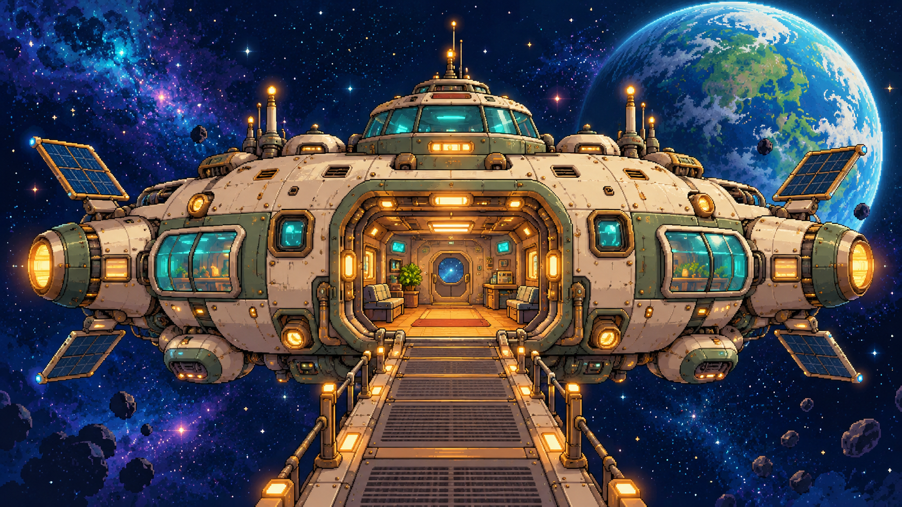
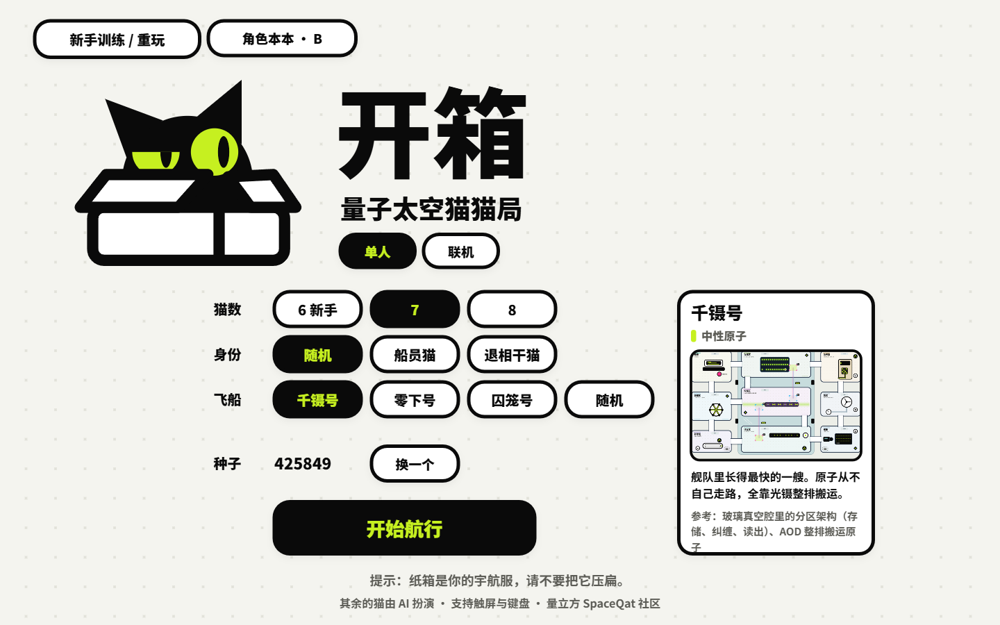

SPACEQAT / PLAY & EXPLORE
Quantum Games✦
Let curiosity lead the way.
Discover quantum ideas through exploration, experiments and a little surprise.
Pick a game. Start exploring.
Play in your browser
Available to playPIXEL ADVENTURE · QUANTUM DISCOVERY
Quantum Expedition
Board a quantum spaceship with Qat. Explore laboratories, find parts, and experiment with quantum gates and measurement on an interstellar adventure.

Solo & training availableSPACE CATS · QUANTUM MYSTERY
Unboxing: Space Cat Mystery
Join a crew of cats aboard a quantum spaceship. Maintain equipment, complete computations and uncover the decoherence cats causing trouble. Learn the ropes with a guided training session.
More quantum games will find their way here.
Quantum Expedition supports local browser saves, without member account sync. Space Cat Mystery currently offers solo play and training; multiplayer is not yet available.